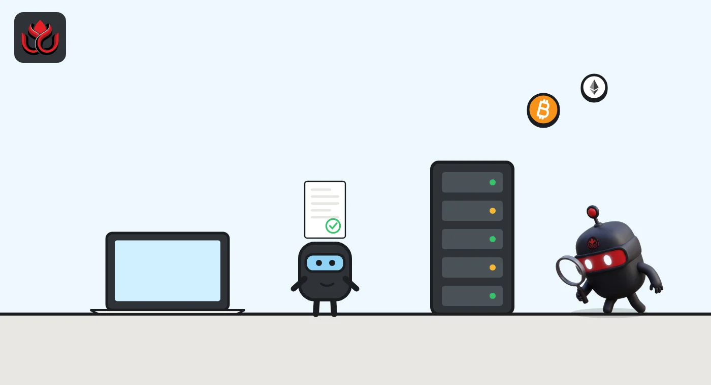
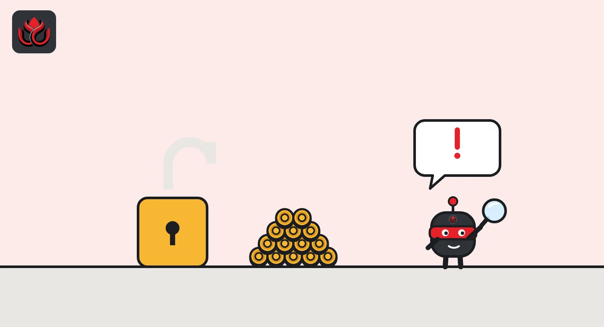

What is x402? The HTTP payment protocol that lets AI agents pay per request
x402 is an open protocol that uses the web's "402 Payment Required" status code so apps and AI agents can pay for an API call or a web page in stablecoins, inside the request itself, with no account or card form.
Key points
- x402 adds payments to ordinary web requests: the server answers "402 Payment Required" with a price, the client signs a payment and retries.
- Coinbase created it and contributed it to the x402 Foundation under the Linux Foundation. No Coinbase product is required to use it.
- Payments are usually in USDC and settle on chains such as Base and Solana in about a second, per the docs.
- Coinbase says its facilitator has processed more than 100 million x402 transactions.
What is x402?
x402 is an open standard for adding per-request payments to HTTP, the protocol every website and API runs on. The name comes from HTTP status code 402, "Payment Required." x402 gives that code a working payment flow.
The official FAQ describes x402 as an open-source protocol, licensed under Apache-2.0, that turns 402 into an onchain payment layer for APIs, websites and AI agents. Coinbase Developer Platform (CDP) created it and provides tooling, but the FAQ says no CDP product is required to use it.
The idea is simple. Instead of signing up, getting an API key and adding a credit card, a buyer sees a price and pays it inside the same request. Coinbase's welcome page says this works for humans and machines, with examples like unlocking premium content or an agent buying a tool call in the middle of a task.
How does x402 work?
Coinbase's how-it-works page lays out the flow. In plain terms:
- A client (a browser, an app or an AI agent) asks a server for something.
- The server replies with status 402 and a PAYMENT-REQUIRED header listing the price, who gets paid and which payment options it accepts.
- The client signs a payment and sends the request again with a PAYMENT-SIGNATURE header.
- The server asks a facilitator to verify the payment, does the work, then asks the facilitator to settle it on the blockchain.
- The server returns the content plus a PAYMENT-RESPONSE header with the settlement result and transaction reference.
Version 1 of the protocol used headers called X-PAYMENT and X-PAYMENT-RESPONSE, according to the CDP FAQ. Reference code exists in TypeScript, Python and Go.

What is a facilitator?
A facilitator is a service that checks payments and pushes them on chain for the seller, so the seller does not have to run blockchain infrastructure. The protocol is permissionless, so anyone can run one. The x402 FAQ says the default x402.org facilitator is meant for testnet development.
Coinbase runs the CDP Facilitator. Its FAQ says the first 1,000 settlements each month are free and each one after that costs $0.001. Verification and failed settlements are not billed. The facilitator usually pays the network gas fee, and it screens every payment against US sanctions lists and risk signals. Circle runs two x402 facilitators of its own, including one that batches many tiny payments and settles the net amount on chain, which Circle says makes sub-cent payments workable.
Does the seller have to trust the facilitator? Less than you might think. The x402 FAQ says buyers sign each payment payload and payments settle directly on chain, so a facilitator that changed the amount or the recipient would fail the signature check. What a facilitator can do is refuse to process a payment, which is why the choice of facilitator still matters for sellers.
CDP Facilitator response times (95th percentile)
milliseconds
Source: Coinbase CDP, x402 FAQ, read November 2, 2026.
Which chains and tokens does x402 support?
The same handshake works across chains. The x402 FAQ lists Base and Solana mainnets plus their testnets. Coinbase's facilitator settles on Base, Polygon, Arbitrum, Monad, World and Solana, per its FAQ. Circle's standard facilitator runs on Arc, Base and Polygon PoS.
USDC is the most common asset, but sellers can accept any ERC-20 token on EVM chains or any SPL token on Solana. Coinbase's FAQ says tokens that support a standard called EIP-3009 need no onchain transaction from the buyer in the common case. Other ERC-20 tokens that go through Permit2 need the buyer to pay gas once for an approval.

What payment types are there?
x402 calls them schemes. The FAQ lists three:
- exact: pay a fixed amount. It is a push payment and cannot be reversed.
- upto: the client authorizes a maximum and pays only for what it used, handy for metered AI work. EVM chains only.
- batch-settlement: the buyer deposits into escrow, signs offchain vouchers, and payments settle in batches. EVM chains only.
The FAQ's example price is $0.001 per request, which shows the target: payments far too small for card networks.
How is x402 different from cards and API keys?
Today most paid APIs work on subscriptions. A developer signs up, adds a card, receives an API key and is billed monthly. x402 removes those steps. The x402 FAQ compares the two directly: near-zero fees and settlement in about a second, versus account and key setup.
Coinbase's FAQ says its facilitator charges no processor or chargeback fees. That is possible because there are no chargebacks: a signed payment settles on chain and is final. Sellers can receive funds at addresses they control, including Coinbase custodial wallets, Coinbase Business, Prime or a self-custody wallet, per the welcome page.
Some things are left to others. The x402 FAQ says fiat off-ramps and card deposits are not built in; facilitators or third parties can add them. Coinbase also runs a discovery index called Bazaar, where paid endpoints are indexed within 10 to 15 minutes of a successful paid call, and targets 99.9% availability for its facilitator.
Who runs x402?
Coinbase contributed x402 to the x402 Foundation, which Coinbase's FAQ says launched under the Linux Foundation in April 2026 with 40 member organizations. Coinbase also says its facilitator has processed more than 100 million x402 transactions. The specification and code sit in the x402-foundation GitHub organization. Big payment companies are building on it too: Mastercard's agent payments product uses x402, as LC Insight reported.
What are the risks?
- Payments are final. The exact scheme is irreversible. There are no chargebacks, so a buyer who pays for a broken API has no card-style dispute.
- Agents can overspend. An AI agent with a funded wallet can pay for things its owner did not want. Coinbase's TypeScript client offers caps per payment and per time window, but they must be set.
- Stablecoin and chain risk. Payments are only as sound as the token and network used.
- Facilitator dependence. Anyone can run one, but in practice large facilitators can screen and block payments.
LC Insight analysis
This section is our reading of the facts above, not a statement of fact.
- x402's real edge is that it reuses HTTP, which every developer already knows. That lowers the bar far more than a new payment app would.
- The figure of 100 million transactions is Coinbase's own and carries no date. Each payment is tiny, so count and dollar value tell very different stories.
- Spending control is the risk to watch. Irreversible payments plus autonomous software mean mistakes cost real money, and the safeguards are optional.
What's next
- New facilitators and chains added to the x402 Foundation list
- Usage figures with dates and dollar values, not just payment counts
- Card networks routing agent payments over x402
Frequently asked questions
Is x402 a cryptocurrency?
No. x402 has no token. It is a protocol that moves existing tokens, mostly USDC, through web requests.
Do I need Coinbase to use x402?
No. The x402 FAQ says CDP provides tooling but no CDP product is required, and anyone can run a facilitator.
How fast is an x402 payment?
The docs say settlement takes about a second. Coinbase lists 95th-percentile settlement at 900 ms on Base and 1,500 ms on Solana.
What does x402 cost?
Network gas is usually paid by the facilitator. Coinbase's facilitator is free for the first 1,000 settlements a month, then $0.001 each.
Disclaimer. This article is based on public information and the sources listed below as of the update time shown. It is for information only and is not investment, legal or tax advice. Figures may change as companies and authorities publish new data.